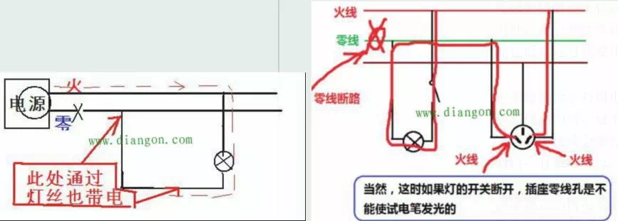
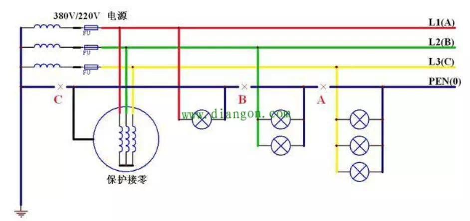
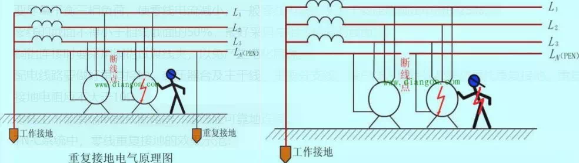

四线制中性点接地系统。一般情况下，当中性点 接地时，则称为零线；若不接地时，则称为中线。零线断线的危害
在三相四线制中性点直接接地的线路中，正常情况下零线是不带电的，这是因为正常时零线上任一点和大地都是同电位的缘故。但是在零线断线后，负荷侧的中性点会产生位移电压，此时若人碰到断落的零线，电流将由相线—负载—零线—人体—零点—相线形成通路，这是极为危险的。 
在三相负载不平衡的情况下（假设下图中单个用电负荷是相同负载的，则正常工作时A相负载最小、B相负载稍大、C相负载最大），零线一旦断路，将产生严重的后果。

当零线在A点发生断线时（B点、C点未断线，下同），凡连接在断开点以后的单相负载，其火线、零线都带电，但却没有电压，因此，负载无法正常工作。
当零线在B点发生断线时，接在断开点以后的B相和C相的单相负载相当于串联后接在B、C两相（380V）上，造成负载大的C相电压低，负载小的B相电压高。如果B相和C相负载一样大，则B相和C相负载各承受电压190V；如果B相和C相负载不一样大，则负载小的相承受的电压高，而负载大的相承受电压低。
当零线在C点发生断线时，由于没有零线导通不平衡电流，为维持三相电流的矢量和等于零，其中性点必将向负载大C相方向位移，造成三相电压不平衡，即负载大的C相电压低，而负载小的A相电压高，三相负载不平衡程度越严重，中性点位移量越大，三相电压不平衡程度越严重。
由于零线断线造成电压畸变，使电气设备工作特性发生变化，电压过低无法工作，电压过高将缩短寿命，甚至烧毁设备造成经济损失。
零线一旦断线，采用保护接零的电气设备将失去保护作用，设备一旦漏电将会造成人身触电，这时即使设备不漏电，由于零线本身带有危险电压使设备外壳带电，同样会造成人身触电事故。
零线断线的预防措施
要尽量平衡三相负荷，使零线电流减小，一般零线电流应不大于变压器额定电流的25%。
零线的截面不得小于相线截面的50%，最好采用与相线相同的截面。
铜铝连接时要采用铜铝过渡线夹，以免产生电化腐蚀。
配电线路要做好重复接地，变压器台及主干线、主要分支线、接户线入口等处都要将零线重复接地。重复接地的接地电阻应不大于10Ω。
零线上不能装熔断器或断路器，零线应可靠地连接。
TN-C系统中，零线重复接地的效果示范：
零线三次谐波
计算表明，当线路中出现3次谐波后，相线电流的变化不大，但中性线电流变化剧烈。 所以当低压配电网中存在谐波时，中性线截面必须加大。 随着建筑物中的电气负荷以节能灯、信息设备等为主要负载，零线电流过大的现象 十分普遍。造成这种现象的根本原因是单相整流电路。而三次谐波电流主要来自于 单相整流电路。因此三次谐波会加剧零线电流过大的现象。那么，三次谐波引起零 线电流过大，零线过热的现象改如何解决呢？零线电流消除器，零线滤波器 虽然三相不平衡会使零线上的电流增大，但是这只是说在一定的范围内的，当三相不平 衡时零线上的电流不会超过任意的一相。 一般的公用台变的零线电流过大会使人触电吗 流过人体的电流才会使人触电，流过零线的电流过大只能使零线“触电〃，与人没有关系。 这个问题我也有过，零线既然有电流为什么不电人，为什么用电笔测，电笔不会 亮？后来，自己想明白了，不是很复杂，只需弄明白几个基本概念：什么是电压， 电势，电势差，电动势，什么是回路，通路，和断路？这样说有人可能觉得太简单 了，课本里都有定义，的确如此，不过要联系实际就不是很容易就想通了。 其中关键点在“相对”和"方向”谁对谁的电压，谁是谁的通路！零线有电流没错，那 是谁的电流？零线与火线构成的回路，正常情况下人体电阻在1800欧左右（趋向 断路），单点触碰零线不能在火-零系统中构成回路，没有电流流过人体所以不会触电 零线和变压器中性点以及变压器接地极相连，也就是说零线到变压器中性点和接地 极的电阻值非常小，而你身体到地的电阻值比零线到地的电阻值大的多。 如果你摸零线从用电器出来的电流不会从阻值大的通道（人的身体）流回大地一一 接地极一一变压器中性点。而是从阻值小的通道（零线）流回。所以摸零线不会触 电（电路没故障时）。 而摸用电器的进线（火线），电流也要找一个通道流回变压器中性点以及变压器接 地极，那用电器是流回的一个通道，而人体就是另一个通道。（用电器都有阻值人 体成了用电器的分流电阻）所以摸进线 （火线）会触电。